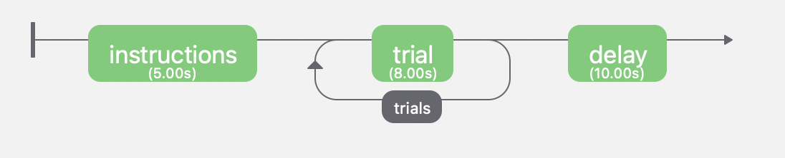

Example use¶
Using RenaLabApp to stream fNIRS data from PsychoPy and NIRx¶
Introduction¶
In this example, we use RenaLabApp to stream a classic fNIRS Stroop effect experiment. Stroop effect experiment let participant input their judgment when experiencing color stroop. This will cause an effect in the prefrontal cortex, whereas the hypothesis is that when text and color are not congruent, there will be activation in the prefrontal region.
In each experiment, we want to have six trails. In each trial there are six cases where we ask participants to input the color of the displayed text. The cases can be:
Congruent : the text is congruent with the text color. For example:
red(color in red).Incongruent : the text is incongruent with the text color. For example:
red(color in green).
There is a 50% congruent rate.
Generate script using PsychoPy¶
Install PsychoPy¶
Install PsychoPy from the download page accoording to the instructions.
Create experiment using PyschoPy¶
Setting Trail¶
In PsychoPy, create an experiment routine by first setting up the trail.
In the components part at the right side panel, select Text to create a fixed text to control the time for each trial. This ensures the functionality to have rest time between each trail.
Add another Text to display the prompt, to make the word change every trail, create a excel that contains all the conditions we want in each trail.
A sample list is this:
word |
color |
congruent |
corAns |
|---|---|---|---|
red |
red |
1 |
r |
red |
green |
0 |
g |
green |
green |
1 |
g |
green |
blue |
0 |
b |
blue |
blue |
1 |
b |
blue |
red |
0 |
r |
Load the list to PsychoPy, set the text as $word and the color as $color, repeat the trail for 6 times by clicking the insert loop button. This will enable us to display text with different colors.
Next is to add a keyboard to record the keyboard response. The keyboard response is set to be the same time as the text display, set the allowed keys to be 'left',``’right’,’down’`` and in the next tab, set the correct answer to be $corrAns.
The sample trial looks like this in PsychoPy:

Setting Introduction and Delay¶
Add an introduction section to the experiment by clicking Insert Routine. Add text and set the time to be 5 seconds, display the instruction of this experiment as the text portion.
Next add a 10 second delay to the experiment routine at the end to give time for RenaLabApp to stop streaming. Similar to the adding of the introduction section, add a block call delay and add fixed text for 10 seconds.
The sample routine looks like this:
{kind=link}
Generate python script¶
At this point, we created a stroop experiment using PsychoPy, we can run the experiment directly in PsychoPy to see the workflow, but in order to be able to add triggers, we need to generate a python script from the PyschoPy GUI.
Click the Complie to Python Script button at the top of the application, a PyshcoPy coder will open up, and a python file will appear in the destinated folder. In the next part, we will add event markers using the Lab Streaming Layer(lsl) and incorporate it with the streaming of RenaLabApp.
Add Event Markers to the Generated Script¶
Event markers are necessary and important parts in the experiments as they indicate the timestamp at which the event happens. Therefore, it is crucial to add correct event markers to the correct place during the experiment and record the event markers when streaming the data.
Identify the Event Marker¶
In this experiment, six types of event markers were set. They are:
Experiment start: value set to be 20, indicating the start of the experiment
Trail Start: indicates the start of the trail
Congruent: value set to be 1. Indicating the appeared prompt is congruent (color is same as the text)
Incongruent: value set to be 2. Indicating the appeared prompt is incongruent (color is different as the text)
Response: indicates user input something, reaction received.
Correct: value set to be 3. Indicating the input answer align with the ground truth (the answer is correct)
Incorrect: value set to be 4. Indicating the input answer does not align with the ground truth (the answer is incorrect)
Trail End: value set to be 15, indicate the time set for a single trail has passed.
Experiment End: value set to be 21. Indicating the end of the experiment with the fact that all of the trails has being completed.
An illustration of all the event markers are show below:

Add Event Marker¶
After configure the event markers that needed to add to the script, we add the trigger to the script. This is archived by using the Lab Streaming Layer (LSL).
Import LSL¶
Install LSL by doing this in the terminal:
pip install pylsl
Import LSL by adding the following command at the import section in the generated script:
from pylsl import StreamInfo, StreamOutlet
Setting up lsl¶
Add the following code to set up the lsl:
info = StreamInfo(name='psylsl', type='Markers', channel_count=1,
channel_format='int32', source_id='uniqueid12345')
# Initialize the stream.
outlet = StreamOutlet(info)
The name is displayed as the channel name in RenaLabApp.
Add triggers¶
The next step is to find when the event happens with the corresponding triggers.
We first create a dictionary:
stroop_marker_dict = {
'stroop':1,
'nonstroop':2
}
user_answer_dict = {
'correct':3,
'incorrect':4
}
trail_start_marker = 10
trail_end_marker = 11
experiment_start_marker = 20
end_start_marker = 21
noresponse_marker = 15
For each event markers:
Experiment start:
We want this event marker push signal when the experiment start, so we add
outlet.push_sample(x=[experiment_start_marker])
In the # --- Run Routine "Instruction" — part. Thus it appears as:
while continueRoutine and routineTimer.getTime() < 5.0:
outlet.push_sample(x=[experiment_start_marker])
# get current time
t = routineTimer.getTime()
tThisFlip = win.getFutureFlipTime(clock=routineTimer)
tThisFlipGlobal = win.getFutureFlipTime(clock=None)
frameN = frameN + 1 # number of completed frames (so 0 is the first frame)
# update/draw components on each frame
Trail Start:
This part happens when the text are generated, so we add triggers at each trail when the text are generated, so the code appears here:
if text.status == NOT_STARTED and tThisFlip >= 0.4-frameTolerance:
# keep track of start time/frame for later
text.frameNStart = frameN # exact frame index
text.tStart = t # local t and not account for scr refresh
text.tStartRefresh = tThisFlipGlobal # on global time
win.timeOnFlip(text, 'tStartRefresh') # time at next scr refresh
# add timestamp to datafile
thisExp.timestampOnFlip(win, 'text.started')
if congruent==1:
outlet.push_sample(x=[stroop_marker_dict['stroop']])
else:
outlet.push_sample(x=[stroop_marker_dict['nonstroop']])
Response:
This happens when we receive a response, so we add this line of code in the `` # — Ending Routine “trial” —`` section:
if key_resp.corr==1:
outlet.push_sample(x=[user_answer_dict['correct']])
else:
outlet.push_sample(x=[user_answer_dict['incorrect']])
if key_resp.keys != None: # we had a response
trials.addData('key_resp.rt', key_resp.rt)
# using non-slip timing so subtract the expected duration of this Routine (unless ended on request)
if routineForceEnded:
outlet.push_sample(x=[noresponse_marker])
routineTimer.reset()
else:
outlet.push_sample(x=[noresponse_marker])
routineTimer.addTime(-4.400000)
thisExp.nextEntry()
Trail End:
Trail end markers happens at the end of each trail, we add it at the time when correctness are generated because it means the trial ends and a reponse is recieved.
if key_resp.status == STARTED and not waitOnFlip:
theseKeys = key_resp.getKeys(keyList=['r','g','b'], waitRelease=False)
_key_resp_allKeys.extend(theseKeys)
if len(_key_resp_allKeys):
key_resp.keys = _key_resp_allKeys[-1].name # just the last key pressed
key_resp.rt = _key_resp_allKeys[-1].rt
# was this correct?
outlet.push_sample(x=[trail_end_marker])
if (key_resp.keys == str(corAns)) or (key_resp.keys == corAns):
key_resp.corr = 1
else:
key_resp.corr = 0
# a response ends the routine
continueRoutine = False
Experiment End:
Added at the end of the experiment.
# completed 6.0 repeats of 'trials'
outlet.push_sample(x=[end_start_marker])
Thus we finished modifying the script.
Setting up NIRx¶
The system that we used for recording the fNIRS data is NIRx’s NIRScout XP fNIRS system. Download NIRStar, the acquisition software for the system, setting up the system according to the instruction. We used prefrontal 8*8 montage and calibrated signal.
In the hardware configuration panel, select Data Streaming tab. In the panel, check Lab Streaming Later (LSL) by clicking Enable LSL Streaming, select data type and confirm the data stream order.
Use RenaLabApp to Stream data¶
Stream Data¶
Open RenaLabApp, In the visualization panel, add the stream NIRStar, this will pop up a stream that can stream data from NIRx.
Add another stream psylsl to RenaLabApp, this will show the event markers.
Under the Preset folder, we can create a json file with the same name as the channel name to setting up the channel.
Open the experiment script from PsychoPy and start stream from NIRStar, click start stream on both NIRStar and psylsl to start stream data.
Record Data¶
At the top panel, go to the second tab Recording. Enter information for Experiment Name, Participant Tag and Session tag , and click Start Recording. The file will be saved to the location displayed on the GUI.
Use the recorded data for processing¶
Import data in python script¶
With the recorded data, we can use the data for the processing. The data is saved in a data file. To import the recorded data, first import RNStream by:
from rena.utils.data_utils import RNStream
The full import list is:
import os
import scipy
from rena.utils.data_utils import RNStream
import matplotlib.pyplot as plt
from matplotlib.pyplot import figure
from mne.decoding import UnsupervisedSpatialFilter
from sklearn.decomposition import PCA, FastICA
import mne
import numpy as np
from params import *
from mne.time_frequency import tfr_morlet
from mne.stats import (ttest_1samp_no_p, bonferroni_correction, fdr_correction,
permutation_t_test, permutation_cluster_1samp_test)
Next import the data to the file by:
# Import data and declare variables#############################################################
# Import data
datapath = "/Users/Exampledat/Participant1_0101_test.dats"
SampleData_rn = RNStream(datapath)
SampleData_data = SampleData_rn.stream_in(jitter_removal=False)
nirs_data = SampleData_data['NIRStar'][0][41:81]
nirs_timestamp = SampleData_data['NIRStar'][1]
Declare the channel by:
# in Hertz
ch_names = ['1-1 HbO', '1-2 HbO', '2-1 HbO', '2-3 HbO', '3-2 HbO', '3-3 HbO', '3-4 HbO', '4-2 HbO', '4-4 HbO',
'4-5 HbO', '5-3 HbO', '5-4 HbO', '5-6 HbO', '6-4 HbO',
'6-5 HbO', '6-6 HbO', '7-5 HbO', '7-7 HbO', '8-6 HbO', '8-7 HbO', '1-1 HbR', '1-2 HbR', '2-1 HbR',
'2-3 HbR', '3-2 HbR', '3-3 HbR', '3-4 HbR', '4-2 HbR', '4-4 HbR', '4-5 HbR', '5-3 HbR', '5-4 HbR',
'5-6 HbR', '6-4 HbR',
'6-5 HbR', '6-6 HbR', '7-5 HbR', '7-7 HbR', '8-6 HbR', '8-7 HbR', 'event_marker']
ch_types = ['hbo', 'hbo', 'hbo', 'hbo', 'hbo', 'hbo', 'hbo', 'hbo', 'hbo', 'hbo', 'hbo', 'hbo', 'hbo', 'hbo', 'hbo',
'hbo', 'hbo', 'hbo', 'hbo', 'hbo',
'hbr', 'hbr', 'hbr', 'hbr', 'hbr', 'hbr', 'hbr', 'hbr', 'hbr', 'hbr', 'hbr', 'hbr', 'hbr', 'hbr', 'hbr',
'hbr', 'hbr', 'hbr', 'hbr', 'hbr', 'stim']
sampling_freq = SampleData_data['NIRStar'][1].shape[0] / (SampleData_data['NIRStar'][1][-1] - SampleData_data['NIRStar'][1][0])
info = mne.create_info(ch_names=ch_names, ch_types=ch_types, sfreq=sampling_freq)
Process the data¶
generating event markers¶
The generated event markers are:
'''
event markers:
1: congruent
2: incongruent
3: correct response
4: incorrect response
'''
# define key inputs
eoi = [1, 2]
event_markers = SampleData_data['psylsl'][0][0, :]
event_markers_timestamps = SampleData_data['psylsl'][1]
data_shape = nirs_data.shape[1]
# generating event makers
stim_array = make_markers(eoi,event_markers,event_markers_timestamps,data_shape,nirs_timestamp,verbose=False)
nirs_data = np.concatenate([nirs_data, stim_array], axis=0)
Where the function make_markers is defined as:
def make_markers(eoi,event_markers,event_markers_timestamps,data_shape,nirs_timestamp, verbose=True):
"""
take input of:
- eoi: list. event of interest (e.g: [1,2])
- event_markers: ndarray. Data for event markers
- event_markers_timestamps: ndarray.
- data_shape: nirs_data.shape
- nirs_timestamp: same length as data_shape
generating stim arrays.ndarray.Which can be concatenated to the data using
(nirs_data = np.concatenate([nirs_data, stim_array], axis=0))
"""
stim_array = np.zeros((1, data_shape))
for event_index in np.argwhere(np.logical_or.reduce(np.array([event_markers == x for x in eoi]))):
this_event_timestamp = event_markers_timestamps[event_index]
if verbose:
print(
f"closest nirs data for event {event_markers[event_index]} timestamp is {nirs_timestamp[np.argmin(np.abs(nirs_timestamp - this_event_timestamp))]}")
stim_index = np.argmin(np.abs(nirs_timestamp - this_event_timestamp))
try:
assert (stim_marker := stim_array[0, stim_index]) == 0
except AssertionError:
raise Exception(
f"Cannot insert eventmarker, stim channel index {stim_index} already has marker {stim_marker}")
stim_array[0, stim_index] = event_markers[event_index]
return stim_array
process raw data using mne¶
The data is processed using mne by:
raw = preprocess_data(nirs_data, info=info, is_filter=True, low=0.02, l_trans_bandwidth=0.02, h_trans_bandwidth=0.3, draw=False)
def preprocess_data(data, info, is_filter=True, low=0.012, high=0.8, h_trans_bandwidth=0.2, l_trans_bandwidth=0.005, draw=True):
"""
plot raw data
"""
raw = mne.io.RawArray(data, info=info)
if draw:
fig = raw.compute_psd().plot(average=True)
fig.suptitle('Before filtering', weight='bold', size='x-large')
fig.subplots_adjust(top=0.88)
if is_filter:
raw = raw.filter(low, high, h_trans_bandwidth=h_trans_bandwidth,
l_trans_bandwidth=l_trans_bandwidth)
if draw:
fig = raw.plot_psd(average=True)
fig.suptitle('After filtering', weight='bold', size='x-large')
fig.subplots_adjust(top=0.88)
return raw
find events¶
The next step is to find the events:
# find events
events = mne.find_events(raw, stim_channel='event_marker')
event_dict = {'congruent': 1,
'incongruent': 2,
}
(events_from_annot,event_dict) = mne.events_from_annotations(raw, event_id=event_dict)
plot signal¶
The signal is plot by:
# plot_signal
plot_raw(raw, events, event_dict, raw_signal=False, visual_event=False)
def plot_raw(raw, events, event_dict, duration=500, show_scrollbars=False, scalings='auto', raw_signal=True, visual_event=False):
if raw_signal:
raw.plot(n_channels=len(raw.ch_names),
duration=duration, show_scrollbars=show_scrollbars, scalings=scalings)
if visual_event:
fig = mne.viz.plot_events(events, event_id=event_dict,
sfreq=raw.info['sfreq'])
fig.subplots_adjust(right=0.7) # make room for the legend
return 0
plot epoch¶
We then separate the signal to different epochs based on the event markers:
# produce epoch ########################################################################
reject_criteria = dict(hbo=60e-2)
tmin, tmax = -5, 15
baseline = (-2, 0.1)
pick_event = [1, 2]
epochs = produce_epoch(raw,events,event_dict,reject_criteria, tmin, tmax, baseline,pick_event,drop_log=False)
def produce_epoch(raw,events,event_dict,reject_criteria, tmin, tmax, baseline, pick_event=[1,2], drop_log=False):
epochs = mne.Epochs(raw, events, event_id=event_dict,
tmin=tmin, tmax=tmax,
reject=reject_criteria, reject_by_annotation=True,
proj=True, baseline=baseline, preload=True,
detrend=None, verbose=False)
if drop_log:
epochs.plot_drop_log()
catch_trials_and_buttonpresses = mne.pick_events(events, include=pick_event)
return epochs
And the epochs can be plot by:
ch = ['1-1 HbO', '1-2 HbO', '2-1 HbO', '2-3 HbO', '3-2 HbO', '3-3 HbO', '3-4 HbO', '4-2 HbO', '4-4 HbO', '4-5 HbO', '5-3 HbO', '5-4 HbO', '5-6 HbO', '6-4 HbO',
'6-5 HbO', '6-6 HbO', '7-5 HbO', '7-7 HbO', '8-6 HbO', '8-7 HbO','1-1 HbR', '1-2 HbR', '2-1 HbR', '2-3 HbR', '3-2 HbR', '3-3 HbR', '3-4 HbR', '4-2 HbR', '4-4 HbR', '4-5 HbR', '5-3 HbR', '5-4 HbR', '5-6 HbR', '6-4 HbR',
'6-5 HbR', '6-6 HbR', '7-5 HbR', '7-7 HbR', '8-6 HbR', '8-7 HbR']
ch2 = ['1-1 HbO', '2-1 HbO', '2-3 HbO', '3-4 HbO', '4-2 HbO', '4-4 HbO', '4-5 HbO', '5-4 HbO', '6-4 HbO',
'6-5 HbO', '1-1 HbR', '2-1 HbR', '2-3 HbR', '3-4 HbR', '4-2 HbR', '4-4 HbR', '4-5 HbR', '5-4 HbR', '6-4 HbR',
'6-5 HbR']
vis_datas(epochs, ch2, event_dict, single_channel=False, average_channel=False, average_plot_no_std=False)
def vis_datas(epochs, ch, event_dict, single_channel=False, average_channel=True, average_plot_no_std=True,
colors=['#AA3377', '#F9C3F7', 'b', '#C3F9F9']):
color_dict = dict(HbO='#AA3377', HbR='b', congruent='#AA3377', incongruent='#F9C3F7', congruentR='b',
incongruentR='#C3F9F9')
styles_dict = dict(incongruent='dashed', congruent='solid')
if single_channel:
visualize_single_channel(epochs, ch=ch, event_groups=event_dict, colors=color_dict, styles=styles_dict)
if average_channel:
visualize_average(epochs, ch=ch, event_groups=event_dict, colors=color_dict, styles=styles_dict)
color_dict = dict(HbO='#AA3377', HbR='b', incongruent='#AA3377', congruent='#F9C3F7', incongruentR='b',
congruentR='#C3F9F9')
styles_dict = dict(congruent='dashed', incongruent='solid')
visualize_average(epochs, ch=ch, event_groups=event_dict, colors=color_dict, styles=styles_dict)
if average_plot_no_std:
evoked_dict = {'incongruent/HbO': epochs['incongruent'].pick_channels(ch).average(picks='hbo'),
'incongruent/HbR': epochs['incongruent'].pick_channels(ch).average(picks='hbr')
}
for condition in evoked_dict:
evoked_dict[condition].rename_channels(lambda x: x[:-4])
color_dict = dict(HbO='#AA3377', HbR='b')
styles_dict = dict(incongruent=dict(linestyle='dashed'))
mne.viz.plot_compare_evokeds(evoked_dict, combine="mean", ci=0.95,
colors=color_dict, styles=styles_dict)
evoked_dict = {'Congruent/HbO': epochs['congruent'].pick_channels(ch).average(picks='hbo'),
'Congruent/HbR': epochs['congruent'].pick_channels(ch).average(picks='hbr'),
}
for condition in evoked_dict:
evoked_dict[condition].rename_channels(lambda x: x[:-4])
color_dict = dict(HbO='#AA3377', HbR='b')
# styles_dict = dict(congruent=dict(linestyle='dashed'))
mne.viz.plot_compare_evokeds(evoked_dict, combine="mean", ci=0.95,
colors=color_dict)
return 0
Statistic analysis¶
A t-test and ANOVA is performed: The t-test is performed by:
# perform t test ######################################################
t_test_plot(epochs,event_name='congruent', ch=ch2, is_plot_1sample=False, is_plot_2sample=False,is_plot_2sample_allch=False)
def t_test_plot(epochs, event_name, ch, title='',out_dir=None, verbose='INFO', fig_size=(10, 15),
is_plot_1sample=True, is_plot_2sample=True, is_plot_2sample_allch=True):
mne.set_log_level(verbose=verbose)
#plt.rcParams["figure.figsize"] = fig_size
cho = ['1-1 HbO', '2-1 HbO', '2-3 HbO', '3-4 HbO', '4-2 HbO', '4-4 HbO', '4-5 HbO', '5-4 HbO', '6-4 HbO',
'6-5 HbO']
chr = ['1-1 HbR', '2-1 HbR', '2-3 HbR', '3-4 HbR', '4-2 HbR', '4-4 HbR', '4-5 HbR', '5-4 HbR', '6-4 HbR',
'6-5 HbR']
count = 0
if is_plot_1sample:
picks = ['hbo','hbr']
for pi in picks:
x1 = epochs.crop(tmin_eeg_viz, tmax_eeg_viz)[event_name].pick_channels(ch).average(
picks=pi).get_data()
out = ttest_1samp_no_p(x1)
print(out)
time_vector = np.linspace(tmin_eeg_viz, tmax_eeg_viz, x1.shape[-1])
plt.plot(time_vector,out, label='{0}, {1}'.format(event_name, pi))
plt.xlabel('Time (sec)')
plt.ylabel('value')
plt.legend()
plt.legend()
plt.title("T-test on average Channel")
if out_dir:
plt.savefig(os.path.join(out_dir, '{0} - Channel {1}.png'.format(title, ch)))
plt.clf()
else:
plt.show()
if is_plot_2sample:
picks = ['hbo', 'hbr']
for pi in picks:
x1 = epochs.crop(tmin_eeg_viz, tmax_eeg_viz)['congruent'].pick_channels(ch).average(
picks=pi).get_data()
xmean = np.mean(x1[0])
print('xmean before= ', xmean)
for i in range(x1.shape[0]):
x1[i] = scipy.stats.zscore(x1[i])
#x1 = preprocessing.normalize(x1)
xmean = np.mean(x1[0])
print('xmean= ', xmean)
x2 = epochs.crop(tmin_eeg_viz, tmax_eeg_viz)['incongruent'].pick_channels(ch).average(
picks=pi).get_data()
for i in range(x2.shape[0]):
x2[i] = scipy.stats.zscore(x2[i])
#x2 = scipy.stats.zscore(x2)
#x2 = preprocessing.normalize(x2)
out = scipy.stats.ttest_ind(x1,x2)
#print(out)
time_vector = np.linspace(tmin_eeg_viz, tmax_eeg_viz, x1.shape[-1])
fig, ax = plt.subplots(figsize=(6, 6))
cax=ax.matshow(out,extent=[-1,13,1,0])
fig.colorbar(cax)
plt.xlabel('Time (sec)')
plt.ylabel('value')
plt.legend()
plt.legend()
plt.title("T-test on average Channel {0}".format(pi))
plt.show()
fig, ax1 = plt.subplots(figsize=(15, 5))
ax2 = ax1.twinx()
ax1.plot(time_vector,out[0],'b',label='t value')
ax2.plot(time_vector, out[1],'r', label='p value')
plt.xlabel('Time (sec)')
ax2.set_ylabel(' p value')
ax1.set_ylabel(' t value')
ax1.legend(['t value'])
ax2.legend(['p value'])
plt.title("T-test on average Channel {0}".format(pi))
plt.show()
if is_plot_2sample_allch:
picks = ['hbo', 'hbr']
channelsele= ['cho','chr']
for pi in picks:
if pi == 'hbo':
channelc = cho
else:
channelc = chr
for ch1 in channelc:
x1 = epochs.crop(tmin_eeg_viz, tmax_eeg_viz)['congruent'].pick_channels([ch1]).get_data().squeeze(1)
xmean = np.mean(x1)
print('xmean before= ', xmean)
#x1 = scipy.stats.zscore(x1)
x1 = preprocessing.normalize(x1)
xmean = np.mean(x1)
print('xmean= ',xmean)
x2 = epochs.crop(tmin_eeg_viz, tmax_eeg_viz)['incongruent'].pick_channels([ch1]).get_data().squeeze(1)
#x2 = scipy.stats.zscore(x2)
x2 = preprocessing.normalize(x2)
out = scipy.stats.ttest_ind(x1,x2)
print(out)
time_vector = np.linspace(tmin_eeg_viz, tmax_eeg_viz, x1.shape[-1])
fig, ax = plt.subplots(figsize=(6, 6))
cax=ax.matshow(out,extent=[-1,13,1,0])
fig.colorbar(cax)
plt.xlabel('Time (sec)')
plt.ylabel('value')
plt.legend()
plt.legend()
plt.title("T-test on average Channel {0} ".format(ch1))
plt.show()
fig, ax1 = plt.subplots(figsize=(15, 5))
ax2 = ax1.twinx()
ax1.plot(time_vector,out[0],'b',label='t value')
ax2.plot(time_vector, out[1],'r', label='p value')
plt.xlabel('Time (sec)')
ax2.set_ylabel(' p value')
ax1.set_ylabel(' t value')
ax1.legend(['t value'])
ax2.legend(['p value'])
plt.title("T-test on average Channel {0} ".format(ch1))
plt.show()
count = count + 1
return 0
The anova is performed by:
# perform ANOVA#######################################################
anova_plot(epochs, pi='hbo', ch=ch2, is_mat_plot= False, is_plot_2sample=True)
def anova_plot(epochs, pi, ch, title='',out_dir=None, verbose='INFO', fig_size=(10, 15),
is_plot_2sample=True, is_mat_plot=True, gaze_behavior=None):
mne.set_log_level(verbose=verbose)
#plt.rcParams["figure.figsize"] = fig_size
cho = ['1-1 HbO', '2-1 HbO', '2-3 HbO', '3-4 HbO', '4-2 HbO', '4-4 HbO', '4-5 HbO', '5-4 HbO', '6-4 HbO',
'6-5 HbO']
chr = ['1-1 HbR', '2-1 HbR', '2-3 HbR', '3-4 HbR', '4-2 HbR', '4-4 HbR', '4-5 HbR', '5-4 HbR', '6-4 HbR',
'6-5 HbR']
count = 0
if is_plot_2sample:
picks = ['hbo', 'hbr']
for pi in picks:
x1 = epochs.crop(tmin_eeg_viz, tmax_eeg_viz)['congruent'].pick_channels(ch).average(
picks=pi).get_data()
for i in range(x1.shape[0]):
x1[i] = scipy.stats.zscore(x1[i])
x2 = epochs.crop(tmin_eeg_viz, tmax_eeg_viz)['incongruent'].pick_channels(ch).average(
picks=pi).get_data()
for i in range(x2.shape[0]):
x2[i] = scipy.stats.zscore(x2[i])
out = scipy.stats.f_oneway(x1, x2)
print(out)
time_vector = np.linspace(tmin_eeg_viz, tmax_eeg_viz, x1.shape[-1])
if is_mat_plot:
fig, ax = plt.subplots(figsize=(6, 6))
cax = ax.matshow(out, extent=[-1, 13, 1, 0])
fig.colorbar(cax)
plt.xlabel('Time (sec)')
plt.ylabel('value')
plt.legend()
plt.legend()
plt.title("ANOVA on average Channel {0}".format(pi))
plt.show()
fig, ax1 = plt.subplots(figsize=(15, 5))
ax2 = ax1.twinx()
ax1.plot(time_vector, out[0], 'b', label='t value')
ax2.plot(time_vector, out[1], 'r', label='p value')
plt.xlabel('Time (sec)')
ax2.set_ylabel(' p value')
ax1.set_ylabel(' F')
ax1.legend(['F'])
ax2.legend(['p value'])
plt.title("ANOVA on average Channel {0}".format(pi))
plt.show()